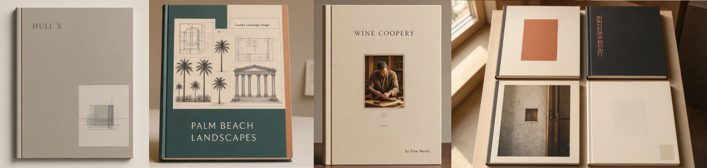
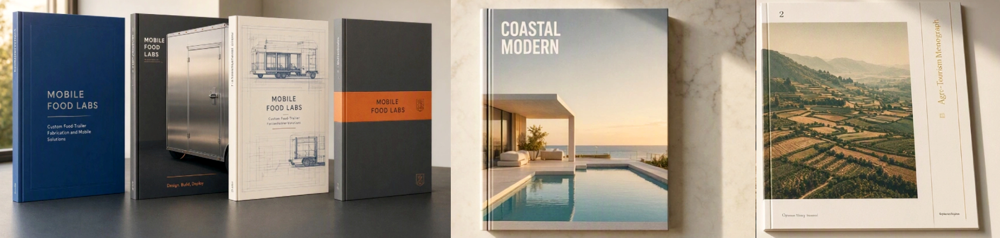
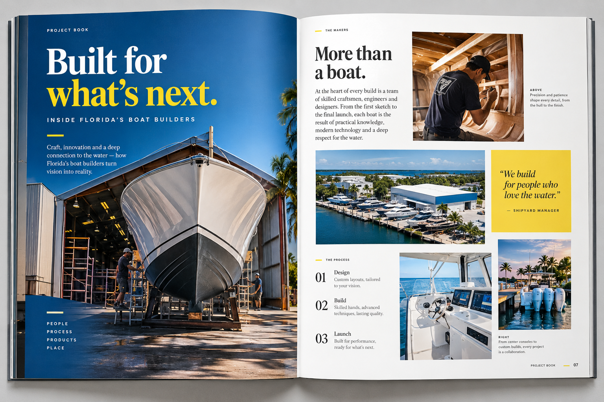
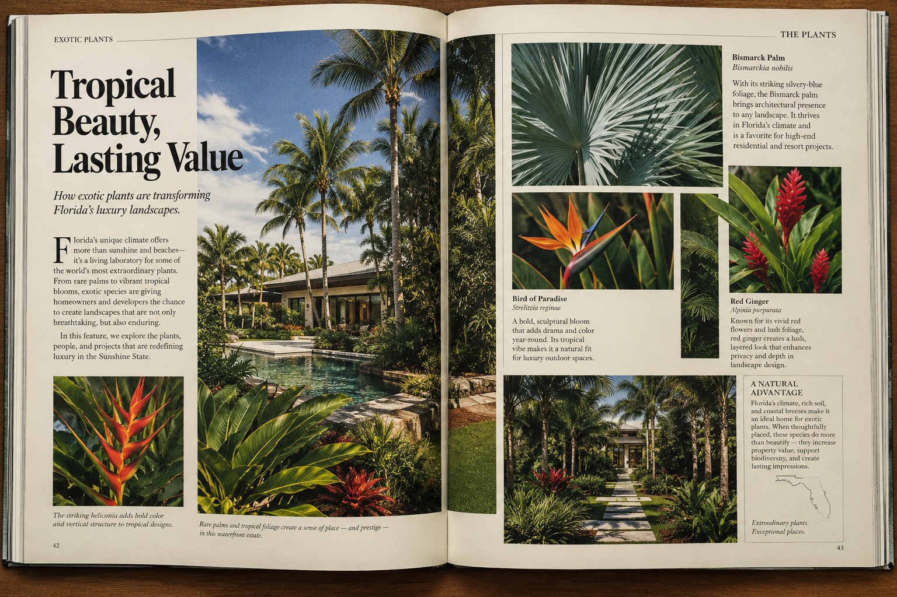
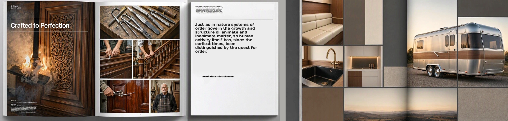
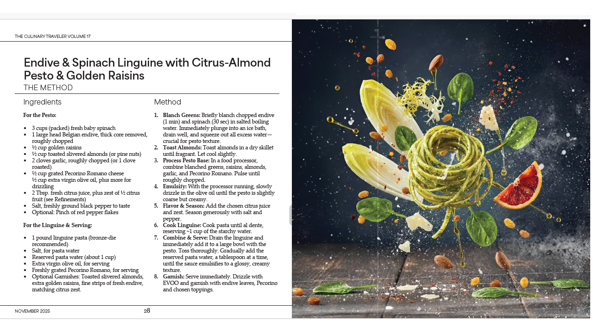

Show the evidence.
Selected projects, finished results, details, and photography that reveal the quality and character of the work.
P1Lab / Editorial Publishing
A small book with the visual authority, editorial intelligence, and considered pacing of a much larger publication.
A considered presentation of your strongest projects, specialist knowledge, and the thinking behind the work. Made to be read, shared, and kept.
The Project Book / The idea
A good project does more than demonstrate what a company can do. It reveals how its people think, what they know, the decisions they make, and the care they bring to the work.
The Project Book brings that evidence together in a professionally edited and designed publication. Selected projects, strong photography, concise explanation, and carefully paced pages make a company’s capabilities tangible.
Not another brochure. A book that gives the work room to speak.
The object / Made to be kept
A portable, 6 × 9-inch perfect-bound book. Strong photography, considered typography, generous white space, and a clear editorial structure make the finished publication inviting to open and easy to use.


Project Book concept mockups. Each cover and interior is developed for the company, subject, and intended reader.
Inside the book / The editorial experience
Each publication is shaped around the work itself. Photography, edited text, captions, diagrams, project detail, and technical knowledge combine to show not only what was made, but what it took to make it well.

Every finished project carries a story of requirements, decisions, materials, practical challenges, and accumulated experience. The book makes that story visible.
012Show the details that matter. Explain the choices that distinguish the work. Give the reader enough context to understand what makes it exceptional.

Interior design studies. The finished layout is tailored to the subject, balancing documentary imagery, explanation, and the natural rhythm of the material.
Page architecture / Layout & Rhythm
Every spread balances documentary weight with generous negative space. Typography, folios, and photographic crops are strictly calibrated to establish an unhurried, museum-grade rhythm.

Layout design and grid architecture. Typographic hierarchy and grid proportions are mapped specifically for 6×9-inch monographs.
The editorial approach
The strongest Project Books do not attempt to say everything. They select the work that tells the clearest story and present it with enough detail to make the company's capabilities understandable.
The result is a publication with a point of view: clear enough to use in business, rich enough to reward a closer look.
Selected projects, finished results, details, and photography that reveal the quality and character of the work.
Requirements, materials, methods, constraints, and the reasoning that shaped the result.
Experience and specialist understanding presented in a form that clients and professional partners can revisit.
The aim is not to make a company sound impressive. It is to make the quality of its work easier to see and understand.
Beyond the bookshelf
A Project Book is a working business publication: something to bring into a meeting, include with a proposal, give to a prospective client, or leave behind after an introduction.
A physical introduction to the company, its projects, and the standards behind them.
A carefully made companion to a proposal or a specific business opportunity.
A publication that can be browsed at a trade event and revisited after the conversation.
A useful record for selected clients, specifiers, collaborators, and professional partners.
The Project Book / The principle
A carefully made book gives the work a physical presence. It lets a prospective client spend time with the details, understand the decisions, and return to the material long after the meeting ends.
From material to publication
Every Project Book starts with an assessment of the subject, the available material, and the reader the publication needs to reach.
Assess existing project photography, descriptions, drawings, records, and other source material.
Establish the editorial structure, select the strongest material, and determine what the reader needs to understand.
Develop concise text, prepare imagery, and create the page-by-page composition.
Complete the fixed-layout PDF and print-ready files, with printed copies and quantities agreed for the project.
P1Lab / Publishing record
The Project Book draws on the same publishing disciplines P1Lab brings to its books and editorial projects: research, writing, photography, art direction, page design, and print preparation.

P1Lab is an independent research and publishing initiative. Its published record includes 31 books, with 10 titles reaching Ingram category top-ten positions.
The Culinary Traveler, Volume 17 is a 50-page example of the work: researched, written, photographed, art-directed, and designed by P1Lab.
It is an example of a complete, published editorial project—not a speculative mockup.
Read the complete issue →Start with the work
Tell us a little about your company, the projects you want to present, and the material already available. P1Lab can assess the opportunity and outline a suitable editorial scope.
Website image disclosure
Website imagery may include documentary photography, illustrations, composites, reconstructions, mockups, and generative imagery. Concept images communicate the intended character and format of the publication; they are not necessarily documentary evidence. The actual Project Book is developed around the client's work and source material.